Yes gumawa nalang ako ng website because 1 pangit sulat, 2 dito lumalabas creativity ko, 3 I like doing this hehe so like parang square sya kasi Im doing something I love on something I love basta yon & FOR THE FIRST TIME IN SO LONG HINDI AKO NAGCRAM
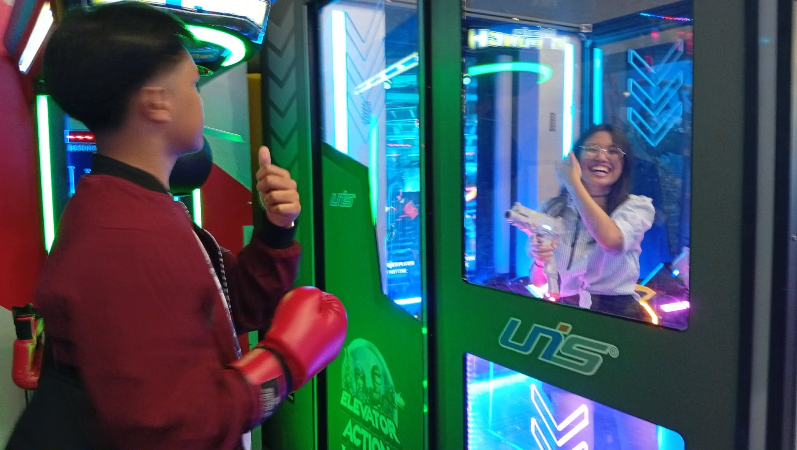
HAPPY 1ST MONTHSARY MY LOVE, SANA NAKALIMUTAN MO TO PARA SURPRISE WAHHAAHAHAHAH(feel ko hindi pero basta)
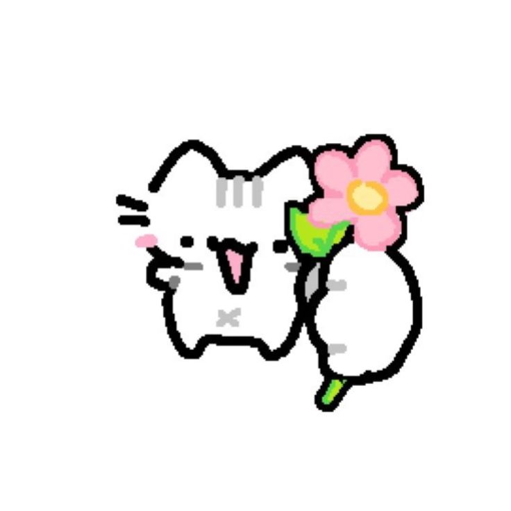
Yk way back I havent even thought of being in this place, meaning nung nagreach out ka, akala ko talaga yun na yon, hanggang dun lang, but I was proven VERY WRONGGG, & IM SO GLAD I WAS because deep down even if I didn't admit to myself, I missed you, I missed us, what we had, & what we could have had, that we are now having together contently & happily
Just heads up, all that I have written will probably be redundant, & repetitions of how I love you, but in different ways & derivations. I tried my best to express myself, the way I love you, & the way I want to love you more. If you will love me always, why not love you more? Why not love you greater? There are a vast sea of things I can use as arguments for me to love you more & more forever. Yet within that sea, theres only you, only you exist in my sea, my paraluman
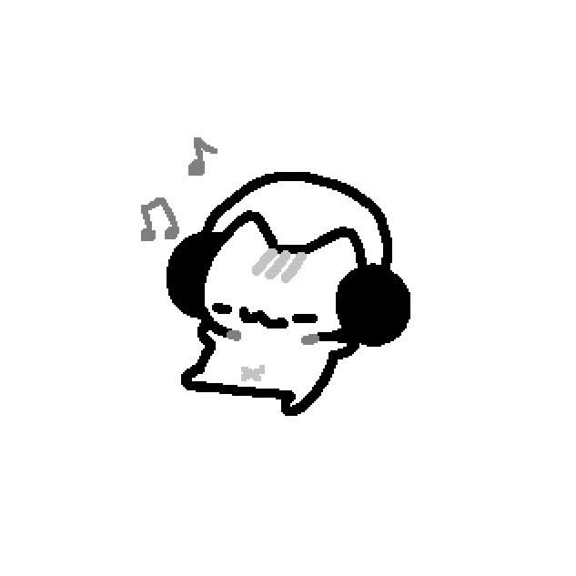
It really felt like you came back exactly when I needed you the most, not someone like you, but YOU, Xyrene. Theres no one else like you, & I will never settle for someone like you; only you are the one that I love because you are art, your existence is so beautiful, wherein I am awestruck by you & everything about you. You are God’s masterpiece, my adiel (HOLY REFERENCE WOO)
Having you is like winning the lottery, but a miracle lottery; I have won more than I bet, WAY MORE than I bet. I only bet my time, & love, but the person that I won, is worth WAY MORE than that, even with all of the things I can put on the line, she, you really are my miracle bet
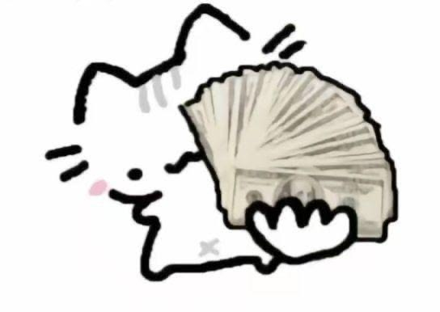
Because you are my one & ONLY adiel, I will do my best & everything in my power to show you how much I love you. Were only a month in & I have a lot to prove over the years. I will show you how to be treated right because your beautiful soul deserves to be treated like a princess. I will show you how love can be beautiful & that there is no point in hiding your feelings. I will show you that the love I give you is the kind of love that you can come home to & be yourself, a home that will always welcome you because you are YOU. I will show you that my love is superb
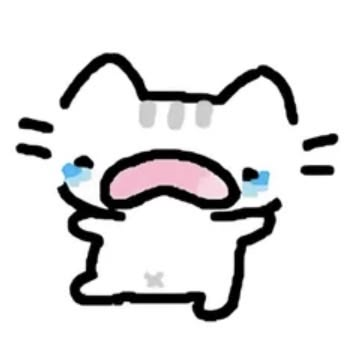
I remember that one time nung christmas where sobrang bonak ko like legit kasi I did not prepared a christmas message for you like THINKING ABOUT IT NOWADAYS PARANG GUSTO KO SAMPALIN SARILI KO KASI WHAT THE HELLLLL so now Ill utilize this opportunity para makabawi heh, this opportunity & the more days that we will be together, the days that we will enjoy together & the days we will cherish. Theres no reason to be sad because Im with you, syempre ikaw na yan e
I remember that time nung christmas also pero christmas party nung nakaskate ka tas muntik ka nang mahulog sa stairs, many things were running through my mind. Firstly kung okay ka KASI SYEMPRE AALALAHANIN MUNA KASI SAFETY FIRSTTT but secondly kung sasaluhin kita because that time like legit sobrang takot akong hawakan ka, its something I really cant explain but I don't know kung mauuncomfy ka or what. But now that I have you, it makes me very happy knowing that rather of you being uncomfy, you find peace being in my arms. It makes me very happy that you treat me as home, that you find stillness in these arms, that in my shoulders, you feel calm
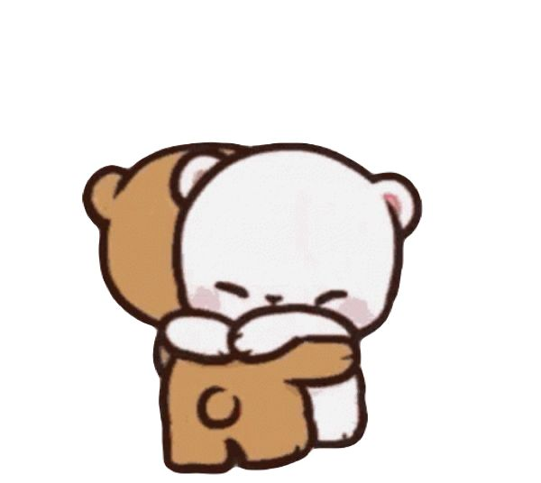
I hope that you will always choose to be in my arms. I hope that you will always choose to rest with me, even if times get hard, even if I don't act like a welcoming place. I hope that even if you lost your key to my heart, or at times where I completely remove the doorknob, I hope that you will break down that door, I want you to save me from my loneliness. I want you even if I may say that I don't want you, because thats untrue, I need you to be by my side, I need to you be the one to hold my hand when I feel like Im falling apart. I only want you to be the one that saves me, because you are you, & I only want you
Ill always choose to be in your arms, through thick & thin. Ill always choose to be wrapped by your lovely hug, the only one I cherish, because its special. Our love is special. What we have is special; its not something you will see among other people. Our love is literally a miracle because of the divine interventions we have experienced. What we have gives me great elation. & Ill always choose to experience this with you. Ill always choose to be wrapped by your love, my sweet anemic
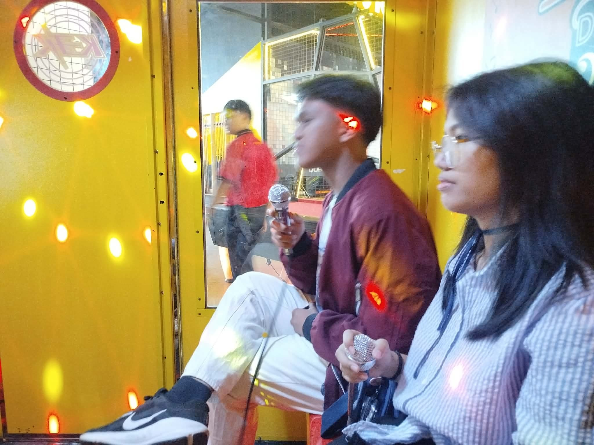
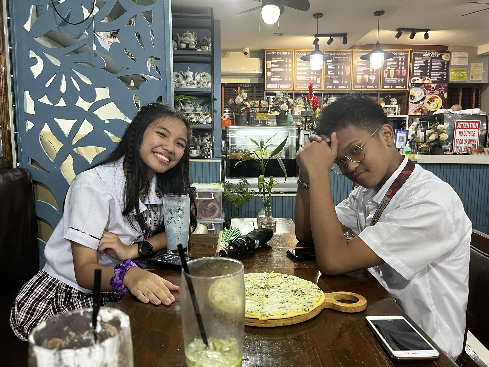
I realized I loved you more than I thought I did when I realized that I never loved you again, rather I never unloved you. The way I subconsciously reserved my feelings for you despite liking another person is what Id say beautiful for my part of the story. Despite liking another person, my heart still beats for you. I realized I loved you more than I thought I did was when I realized my love for you never did blemish.
Even if you dont admit it, even if you dont see it, your existence changed me as a person. Your existence saved me from being worse. Your existence inspired me to strive as a better person. Kahit sa mga panahong wala ka pa, our experience from that drove me to start improving for myself. To start actually trying. To actually appreciate the little things, To appreciate life as a whole. Even if I didnt know, or refused to acknowledge, these things are also due to the fact that I was still waiting for you to return. The way I never threw away our photos, The way I still kept the blue octopus. Even if I didnt want to admit it, I was still waiting for you to return, my lablab
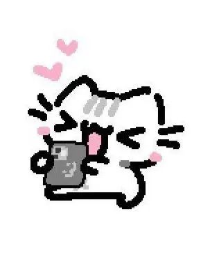
Even if I love you, appreciate you, & cherish you, theres still something missing. I like you. Even if we are already together, I still like you more than you think, always. Even if loving you feels like home, somewhere I can rest & be myself, somewhere I dont need to fear about anything, I still like you; the way you give me butterflies, the way you do the little things you think I dont notice (trust me I most definitely do halata ka e HAHAHAHAHAHAHA), the way I search for you in the crowd. It feels amazing how loving you feels like home yet I still have a crush on you
One of the things I love most about us is how much we oppose each other in terms of personality & stuff yet someone we still find connection with that. Yung tipong nilalamig ka na tas ako chill lang, yung tipong inaantok nako pero ikaw sobrang energetic para nakainom ng strong coffee like woah unstoppable duo(pero buti nalang nahawaan kita ng sleep sched ko heh) WOAH ANGGALING KACHACHAT MO LANG TAS SABI MO KAMOTE MAGDRIVE LOLO MO TAS NATAKOT KA LIKE WOAH ID LOWKEY ENJOY THAT HAHAHAHAHAHA (adhd yarn) But then we have our times na nagiinterlink tayo na SOBRANG INTERLINK TALAGA LIKE SAME BRAIN FREQUENCY & ALLAT
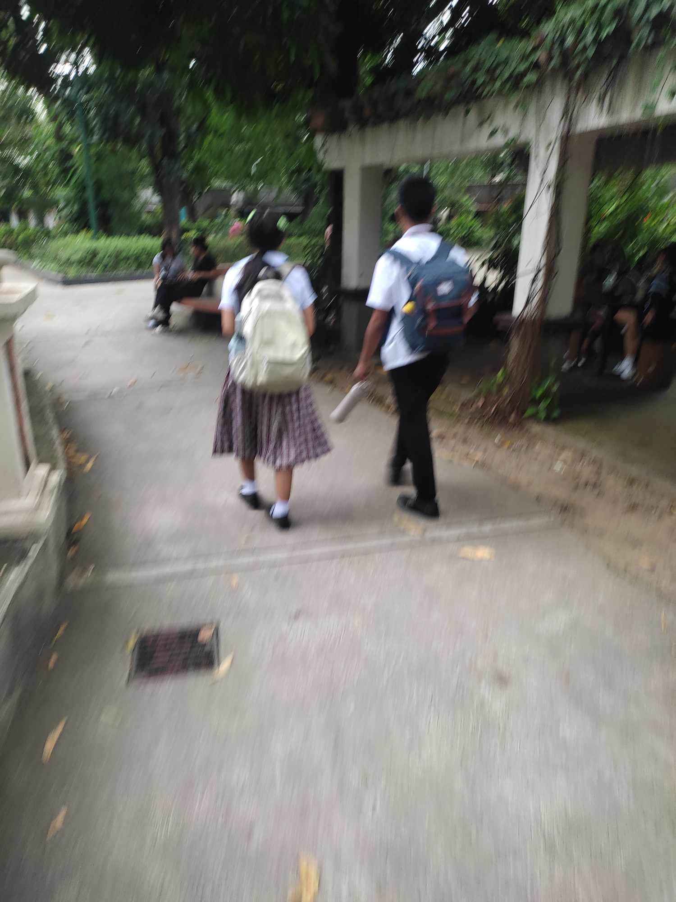
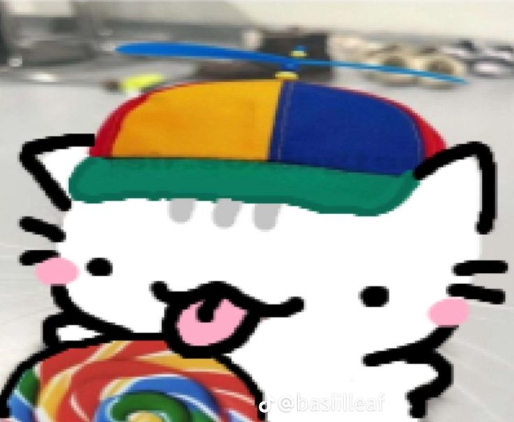
Naalala ko bigla yung nawala selpon mo HAHAHAHAHAHAHAHAH NAENJOY KO YON FOR SOME REASON, LIKE ANGUNIQUE NG FIRST HOLDING HANDS STORY NATIN HAHAHAHAHAAH EWAN KO BA BASTA TAWANG TAWA AKO BUT its good na hindi nawala yung selpon heh, tas nakasidequest pa tayo pero ang bagsak elp 7/11 lang din pala HAHHAHAHAHA FOR SOMEREASON NAKAKATAWA BUT THE WAY WE BONDED ON THAT DAY REALLY MAKES ME HAPPYYY
I appreciate you WAY MORE THAN I SHOW; yes matamlay ako cuz oxytocin, yes palagi akong sleep deprived kahit 10 hours na tulog ko, yes sometimes your energy completely overshadows mine, but these things simply goes to show how much tou mean to me & how much you change me as a person, & it also shows how beautiful & artful you are. The way you touch my head whenever I feel down or tired, the way that you always make sure that Im fine, yung paghihintay mo sakin kapag hindi pa tapos klase namin, the way you love me makes me feel like I hit jackpot; or rather, I was blessed by God with my own angel. I really wish I could hug you all day & not let go
I have found my love for writing because of you. You leaving me & loving me again gave me a bigger reason to immortalize you through every piece I write. Sayang naman kung walang makakaalam kung gano ka kaganda diba; not just looks even though youre so pretty, but also the way you are you. No matter how much I may appreciate youre soul in this piece that I wrote, Im afraid its still not enough. Everything about you is worth a spot in history. The way you laugh, the way you appreciate things; the fact that youre sentimental & sensitive, these things are not to be hidden & thought as bad, these things are the things that makes you YOU & unique. These things that I say are simply not enough, your beauty is unexplainable & incomprehensible. I will forever love you for you being you
Sometimes I still wonder why out of all the people out there, out of all the people better than me, you still chose me. The fact that you & your beauty went like “hes funny Im keeping him” like WHAT HAHAHAHAHAHAH Its really something na like HINDI KO MAEXPLAIN PERO LIKE WHYYYYYYYY KAHIT ANONG EXPLAIN MO HINDI KO MAINTINDIHAN; but like I said way back, I guess thats your little secret, one of the things that make you more ethereal
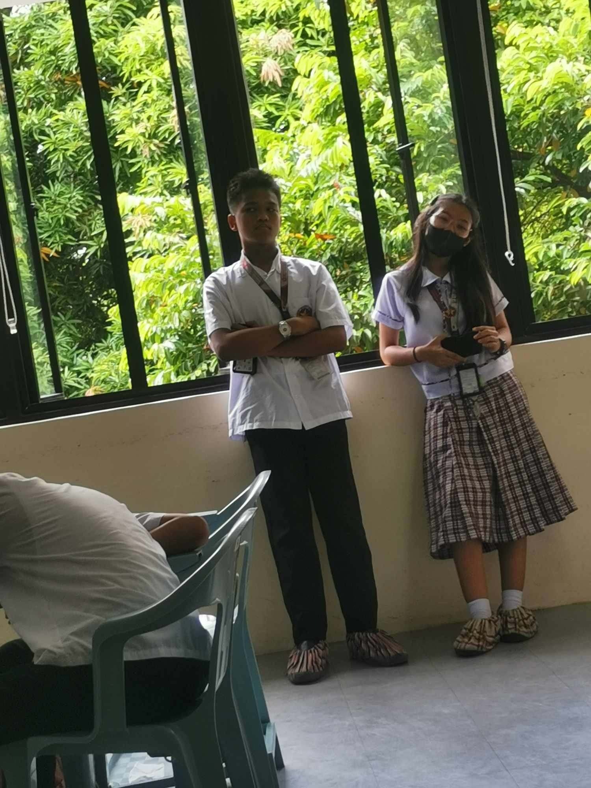
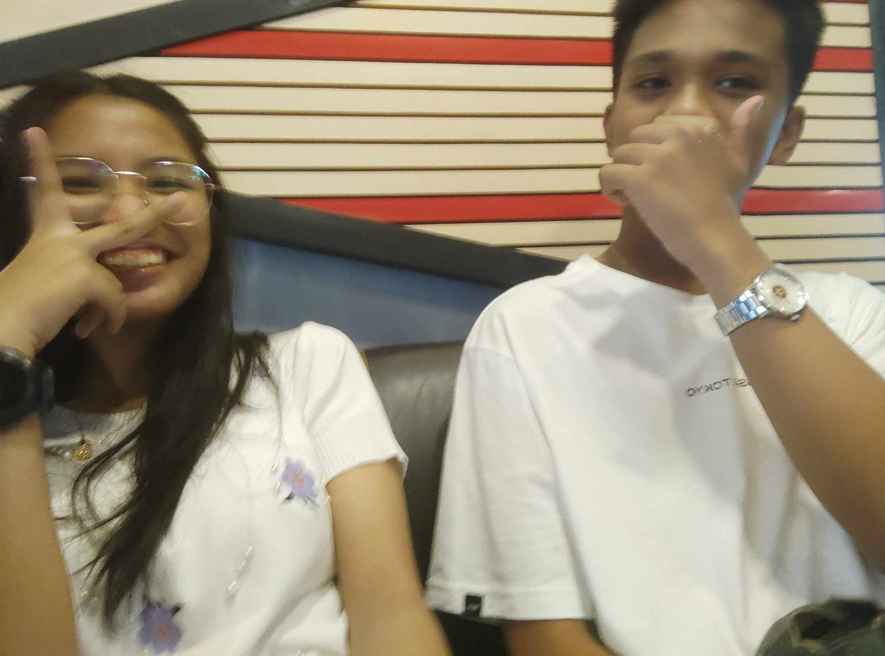
& just like I said on my earlier letter, the way I dont understand why you still chose me despite seeing my imperfections & despite out there having countless amount of people better than me is another reason to crush on you more. PARA AKONG ANGCOCONFESS AKO DITO HAHAHAHAHA HELP MEEEE But it really gives me butterflies, especially because its something I dont understand, & its another reason to like you. Its something I always want to feel, something I only want you to make me feel
As Im writing this ngayon ko lang narealize kung gano talaga tayo kaiconic. Like what do you mean halos lahat ng tao namiss tayo, TAYO. LIKE AS IN. WERE LIVING SOMEONES WEBTOON STORY RN. WERE LIVING SOMEONES FANFIC SOMEWHERE OUT THERE ON TIKTOK. Were living a reality of someones fantasy. WALA RANDOM THOUGHT LANG AHAHAHAHAHAHAHAAHA
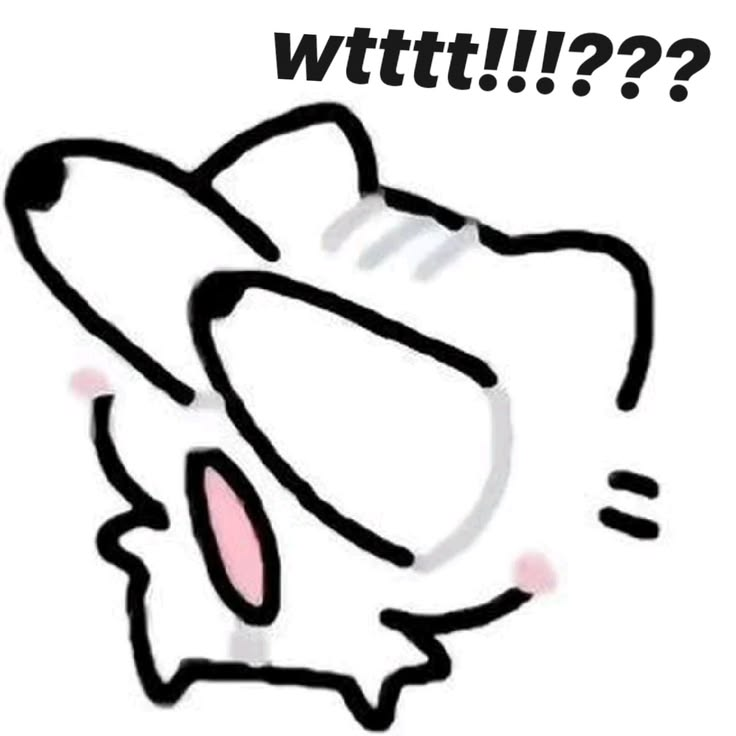
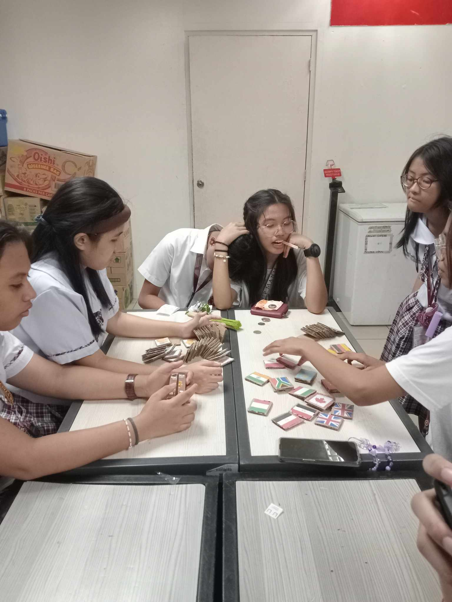
Another random thought, it still surprises me how much your mother approves of me, theres really nothing much to say here but the way she apCs of me at such a young age means that she has given me a mission; a mission to love you till death. I know I have said this before but Ill gladly accept that mission. A mission that I know I will do without regrets, & I never will
Whenever I see the basilleaf cat it always gives me a rush of oxytocin because it our little thing. Its our first little thing. Whenever I see that cat, I always remember how sweet we were kahit noong grade 8 until today (eto insert posa). The way that despite all that this world tried to throw at us, we still found our way to each other like awww
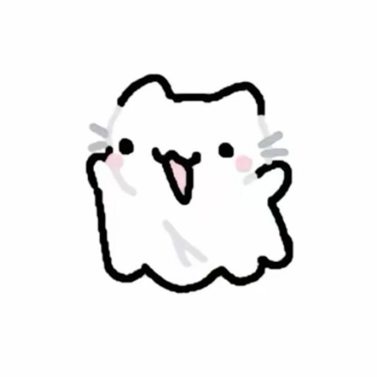
Ill always hold your hand whenever I can. I will never be afraid to show everyone how much I love you. How much we love each other despite everything we went through. Despite 14 months. Ill always take pride because of how strong we are, & Ill always be proud of us. Kahit kailan man, hindi kita ipagkakahiya. Palagi kitang mamahalin. Palagi kitang ipagyayabang. Palagi kitang ipagmamalaki. Dahil mahal kita
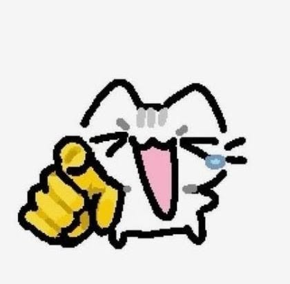
As Im writing this certain letter, inaantok nako yes its 10:29 & its way past my bedtime, I could only think of how much I miss you despite having said that so much in this message. HELPME AS IM WRITING THIS YOU JUST CHATTED ME NA HALF ASLEEP KA NA HELPWHAHAHAHAHAHAHAHAHAAHHAHAHAHAHAH WHAT IN THE WORLDDD SOBRANG INTERLINKED NATIN DON LETS GOOO HAHAHA ANOBAYAN NAHAHALATA NAKO PERO OKAY LANG HELP THIS IS MAKING ME SO HAPPY
ALL THE STARS ALIGNED FOR US, SO THAT YOU COULD LOVE ME TO THE STARS & BACK; & WE LIVE IN THE PERFECT TIMELINE SO THAT I COULD LOVE YOU TO THE EDGE OF THE UNIVERSE, Its something out of a dream, not mentioning all of the coincidences, its something na hindi ko parin fully narerealize, something straight out of a movie, a movie we wrote ourselves
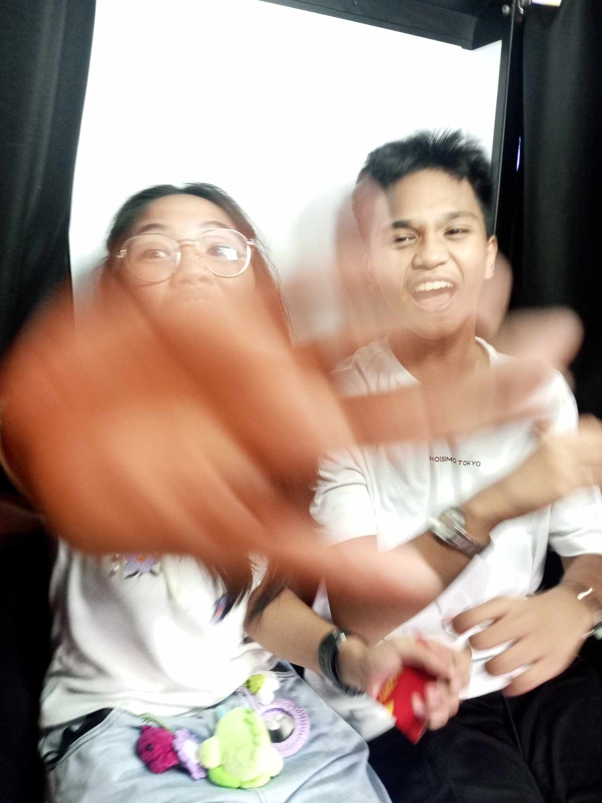
Despite having written our own movie, I still want you to write your own. I want you to have your own life so that you learn how to love yourself. I want you to learn to love yourself as you love me so that you too will grow. So that we will grow together yet we still grow both as each other’s halves & as an individual. Hindi naman pwede sakin lang iikot ang buhay mo. Kailangang mahalin mo rin ang sarili mo. But always know that Ill always be by your side. These things are something that I want to further strengthen our relationship, something I want to establish
Pero syempre wag mong kalimutan na mahalin din ako HAHAHAHAHAHA corny lala
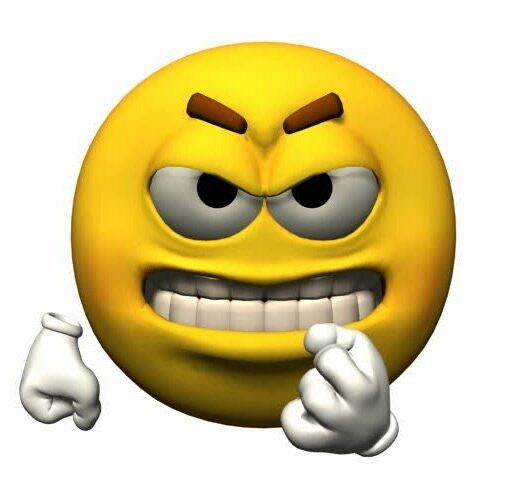
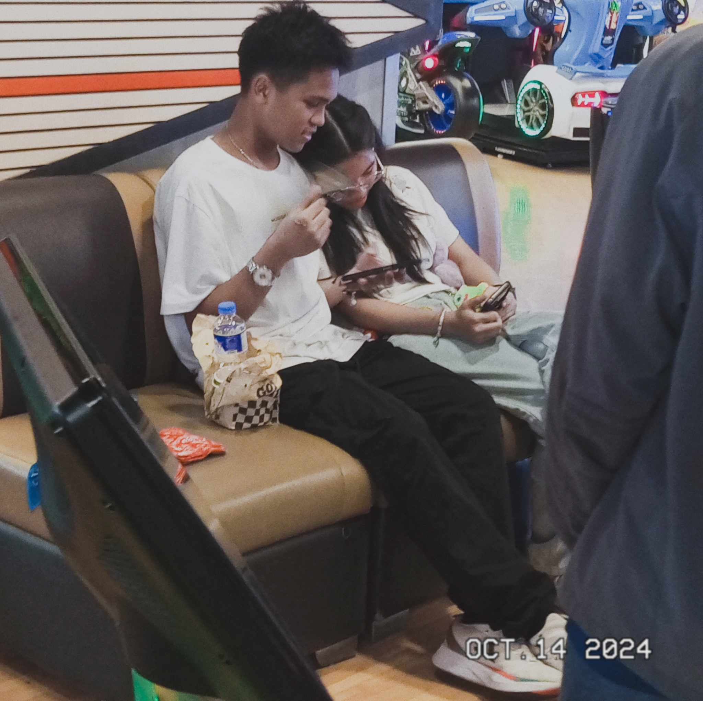
Sana balang araw ano yes another random thought sana makapunta tayo moa tas sakto golden hour ulit para nung sa gateway lang tapos nakatambay tayo sa seaside like yun yung fantasy ko ngayon tas syempre nakasandal ako sayo because thats my favv
You know I probably wont be able to make another message as long & as hard worked as this one just because of how much I squeezed my vocabulary to express my feelings best but that does not mean that you do not deserve more. You deserve everything in this world. You deserve my love, even at time when you think you do not. You deserve my love simply because I love you. No matter what, Ill always love you, & Ill make sure that you will always feel enough. You will always have me, thats for sure
I want you to realize much I love you, appreciate you, like you, miss you, & need you. I have loved you yesterday, today, tomorrow, & forever more, to the edge of the universe. I hope these letters will serve as an anthem
Owkay now basahin mo lahat ng last letter per letter including title HAHAHAHAHAHAH (kasama yung sa baba ah buong title)